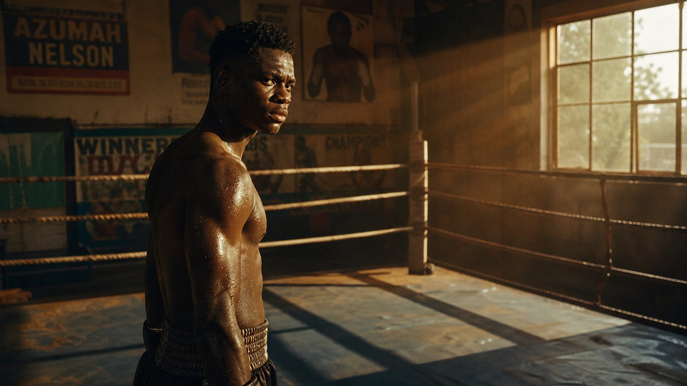
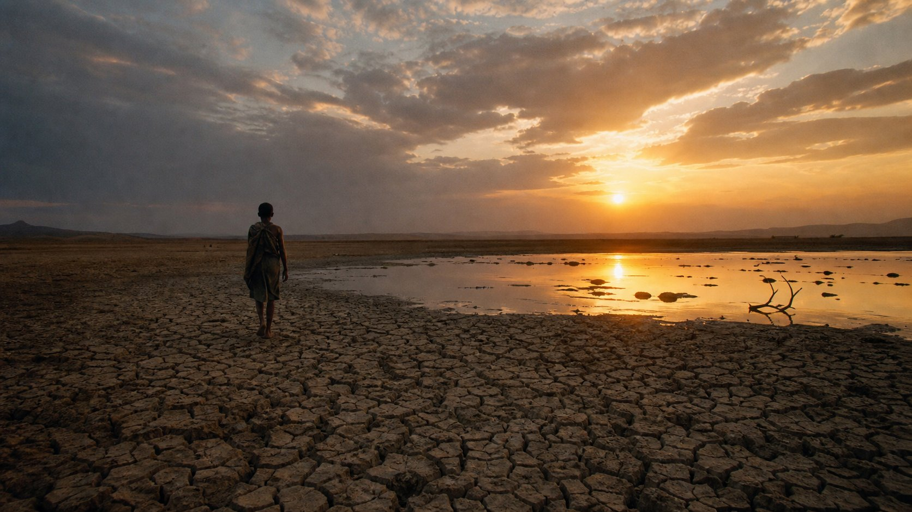
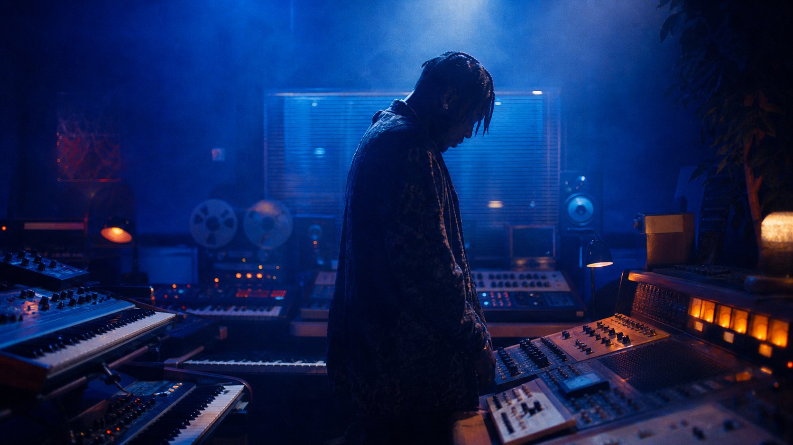

"Light is not decoration. It is the language of feeling. I don't light a scene — I translate emotion into photons."
— Kofi Mensah, BSC interview, 2024



Born in Accra, raised between London and Kumasi. I learned cinematography not from textbooks but from watching how light falls on my grandmother's face at dusk — that golden hour when everything becomes sacred.
My work spans feature films, documentaries, and visual albums, with a focus on stories that explore the African diaspora. I believe in chiaroscuro — the tension between light and dark that mirrors the human condition.
Every frame I shoot is a painting. Every shadow is a decision. I don't just capture images — I translate emotion into light.
"The camera doesn't lie. But it can choose which truth to tell. That choice is everything."